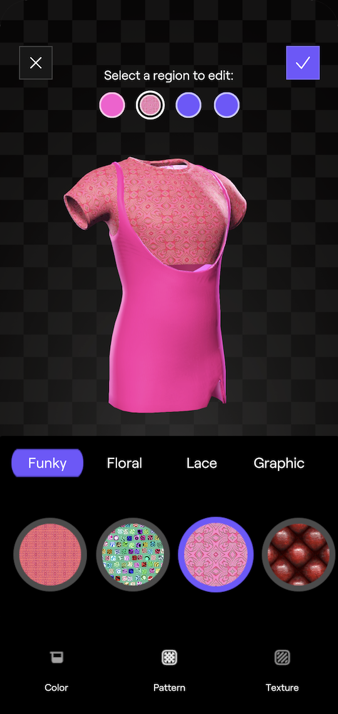
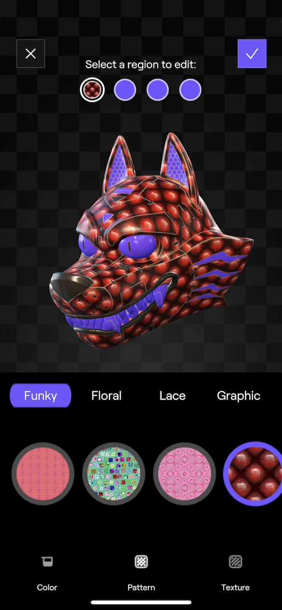
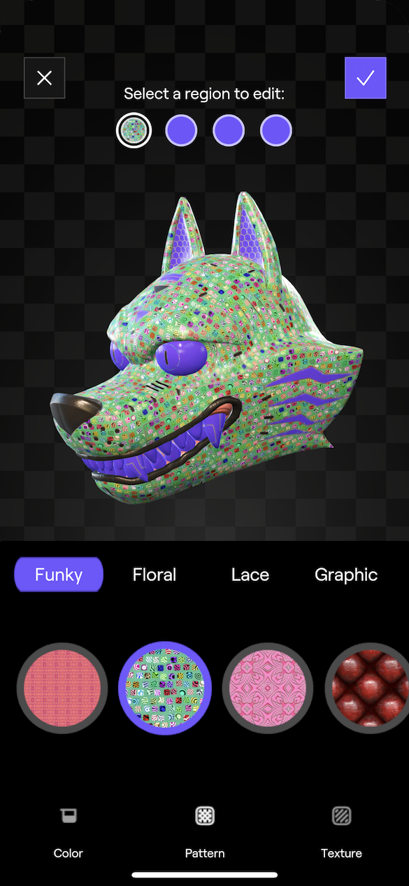
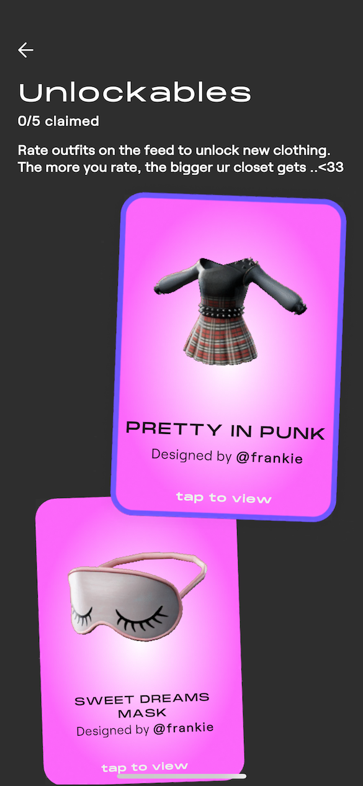
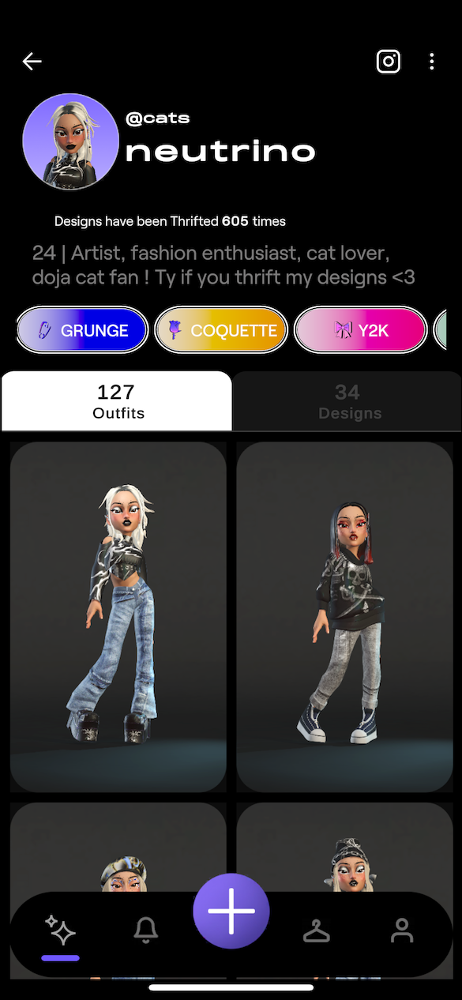
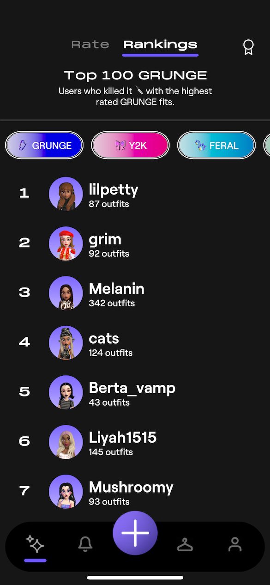
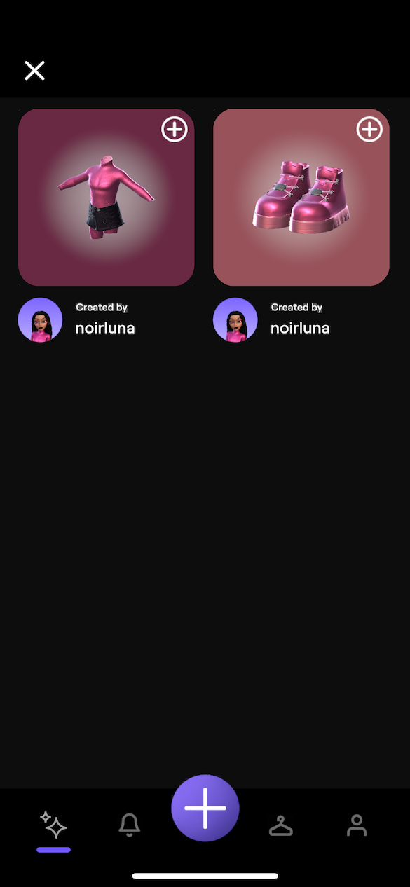

Silver Studio
Silver Studio was our Avatar Fashion app, where users could create wearables, customize their avatars, and generate videos for a social feed.
Cut n Mix Basic Tools
Led the Cut n Mix Basic Tools launch end-to-end, a wearable customization feature allowing users to personalize colors, texture patterns, and surface materials (cloth, wool, etc.) on their avatar's clothing and save those configurations to their account. Drove feasibility discovery for custom shader manipulation and wearable creation, and deliberately architected the core system with clear boundaries, supporting UML diagrams, and centralized documentation, enabling work to be distributed across the team and executed in parallel to accelerate development speed.



Foundational Social Layer
Architected and delivered Silver Studio's foundational social layer, enabling users to save avatar poses and animations, share wearables, browse video feeds, and manage profiles and blocking, forming the backbone of the app's social experience.



